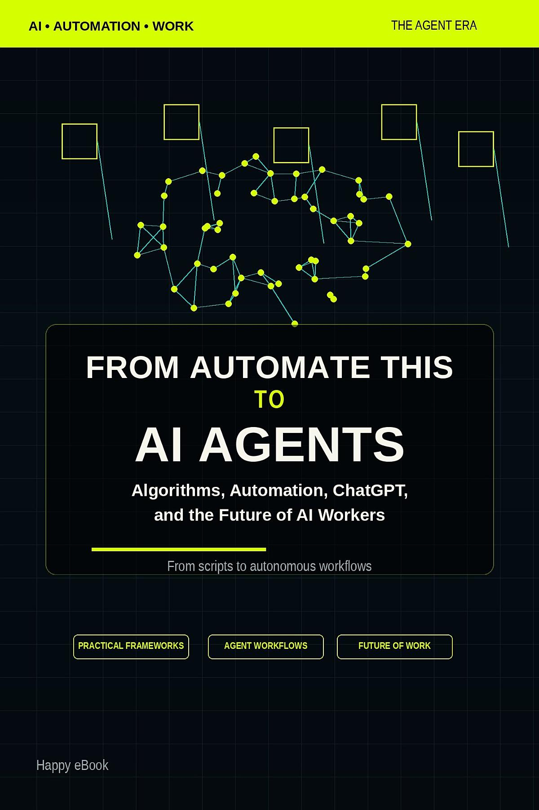

Google Play Books
From Automate This to AI Agents
A practical map from workflow automation to AI agents

付費購買提供試閱版AI 學習 / AI Agent / AI 工具應用
From Automate This to AI Agents
A practical map from workflow automation to AI agents
An English-language guide for readers who want to understand how traditional automation has evolved into AI-assisted workflows and agent-based systems. The book introduces practical concepts in plain language, helping readers connect scripts, tools, prompts, and autonomous task execution.